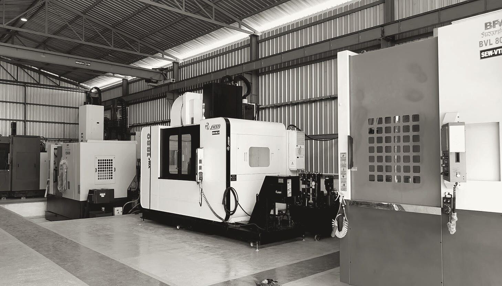

About Surya
A precision machine shop built around large components
In Viralimalai, Tamil Nadu, since 2012.
Surya Engineering Works is a precision engineering company in Viralimalai, Tamil Nadu, in operation since 2012. We are managed by a team of experienced engineers and skilled machinists, and we manufacture both high-precision and conventional machined components.
Our units are equipped with modern manufacturing and inspection facilities, and we follow established manufacturing and quality-control processes so that every product meets the required standard. Both units are certified to ISO 9001:2015 by TÜV India (TÜV NORD Group).
We aim to work with our customers on a long-term basis, manufacturing precision components, jigs and fixtures to their drawings. We are also happy to develop import-substitution items and components that you need.
You are welcome to visit our units at your convenience and see our facilities and capabilities for yourself.
Our people
- Proprietor
- M. Shankar
- Manager
- S. Pathmanaban
- Production
- J. Arockia Dass
- Quality
- R. Nivas Kumar
- Canada
- Achyuth Shankar
How we work

Machine shop · Viralimalai, Tamil Nadu
Facilities
Two machine shops in Viralimalai
17,000 sq ft covered
8,600 sq ft covered
Material handling
EOT cranes · 4
| Capacity | Make | Qty |
|---|---|---|
| 5 t | Manthan | 1 |
| 2 t | Manthan | 1 |
| 2 t | Vinayaka | 1 |
| 1 t | Intef | 1 |
Utilities
Power and air
- Backup power
- 125 kVA Ashok Leyland generator
- Compressor
- Elgi screw, 1,000 L, 20 HP
- Compressor
- Frank, 500 L, 10 HP
Quality and certification
Certified, and measured on CMM
Our ISO scope at both units covers the machining of valve components and engineering components.
ISO 9001:2015 · Unit 1
Certified by TÜV India (TÜV NORD Group). First certified in 2015.
ISO 9001:2015 · Unit 2
Certified by TÜV India (TÜV NORD Group) since 2024.
IBR firm registration
Approved by the Directorate of Boilers, Tamil Nadu, for machining boiler components under the Indian Boiler Regulations, 1950.
1,800 mm measuring range · 0.008 mm point repeatability
1,023 mm measuring range · 2.5 µm point repeatability
Start a project
Send us one drawing.
Tell us the quantity, material and delivery date. We will quote it with no obligation, and you can inspect a first part before you commit.